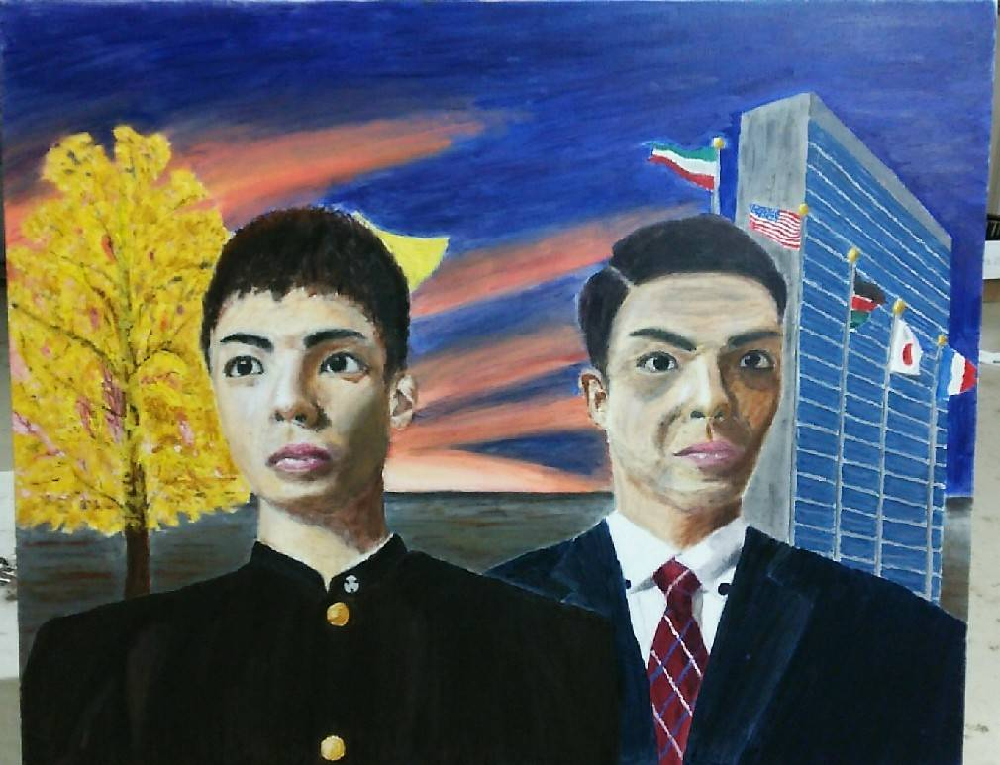
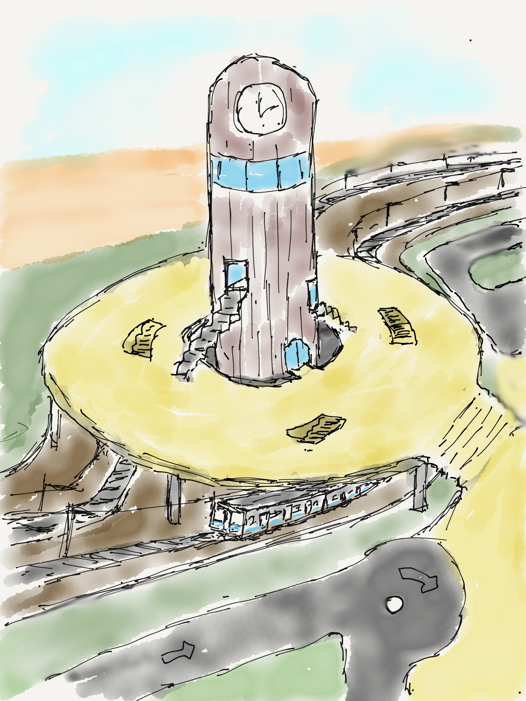
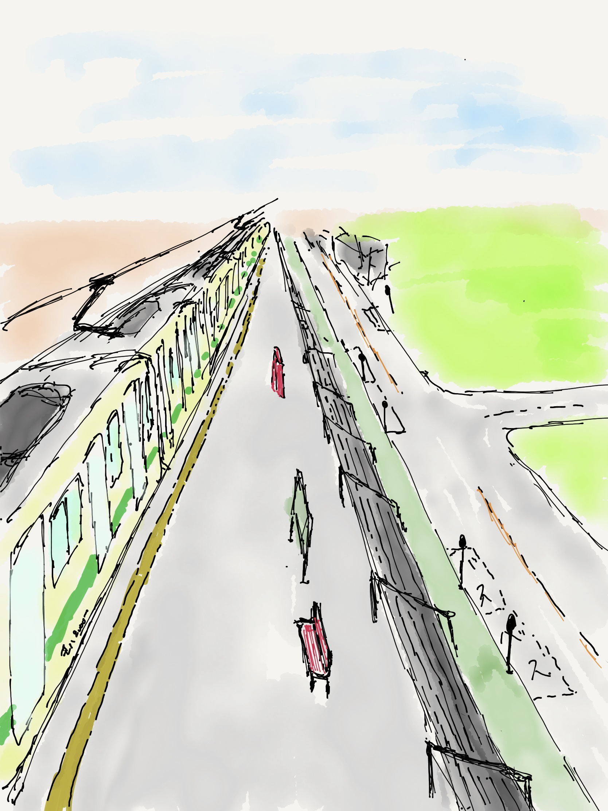
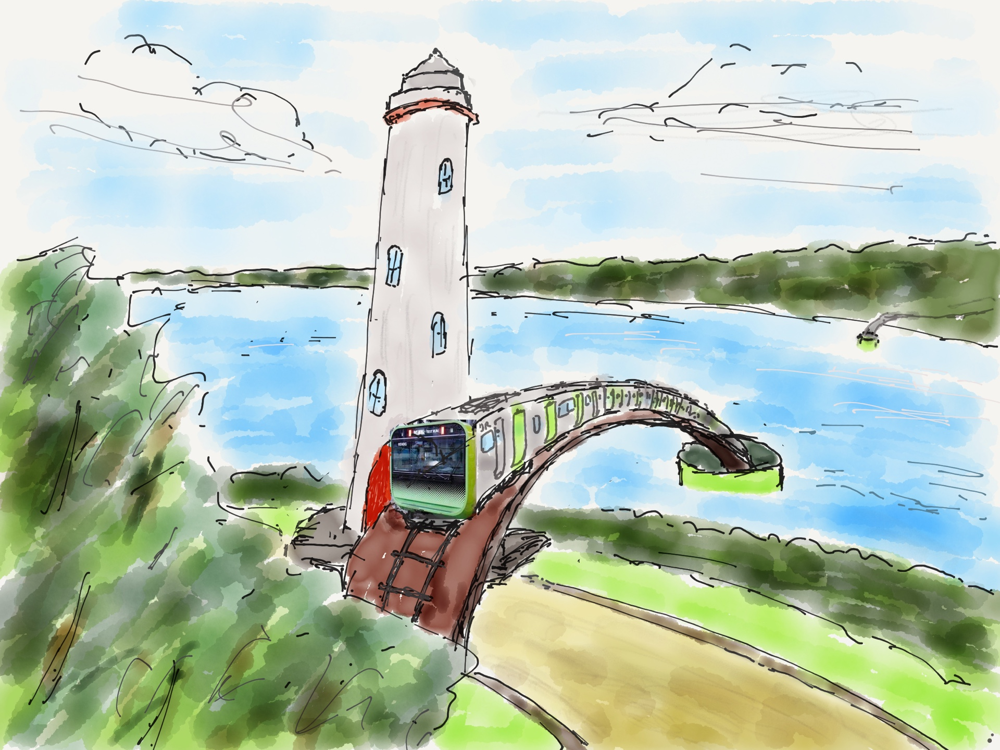
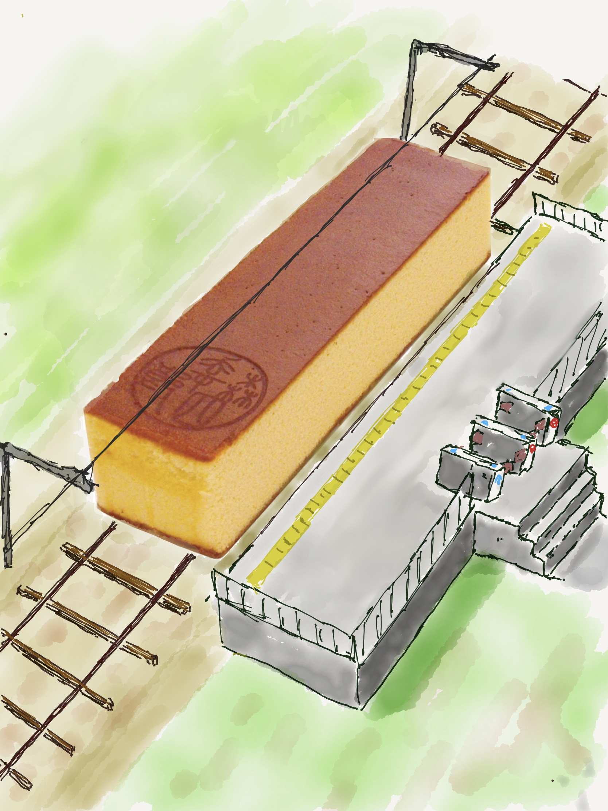
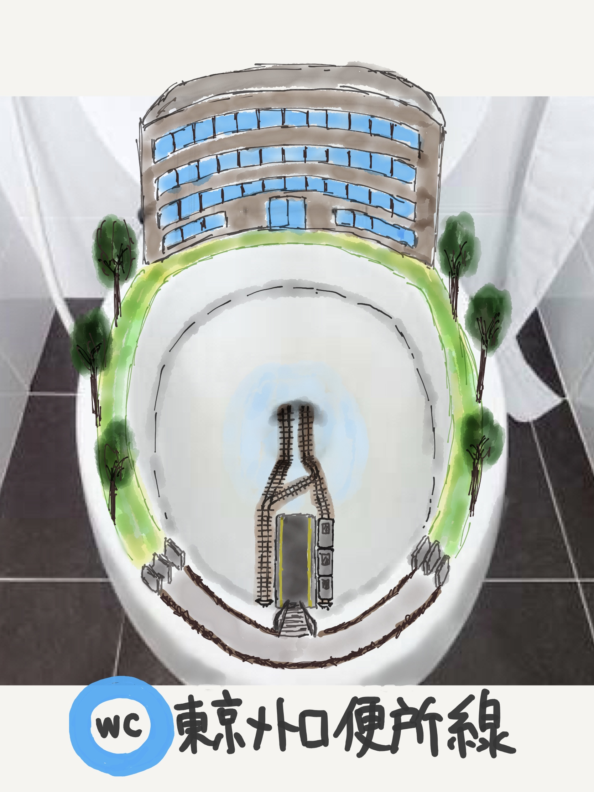
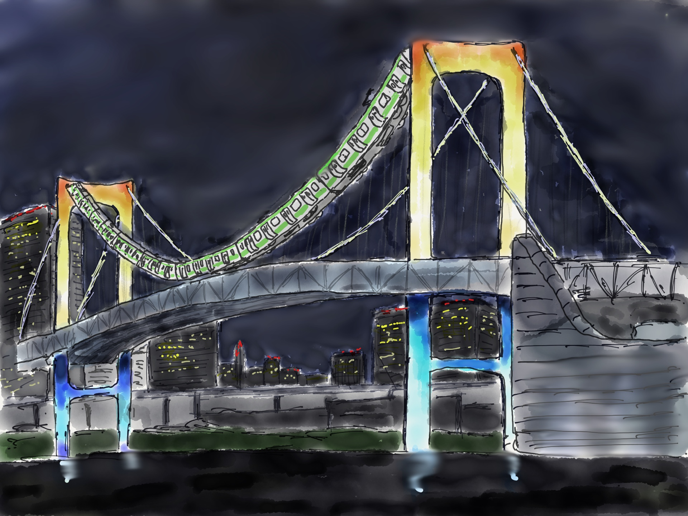
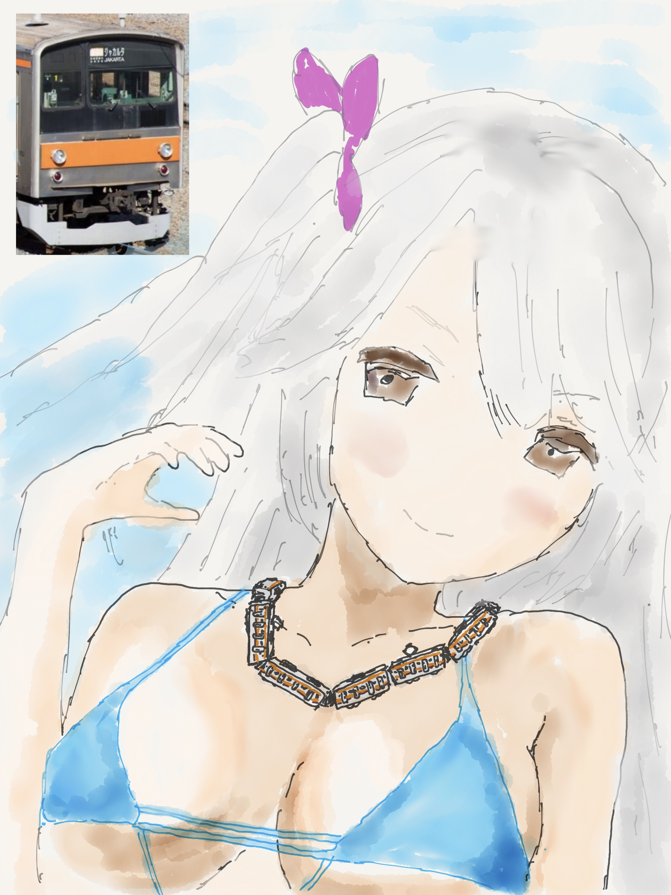
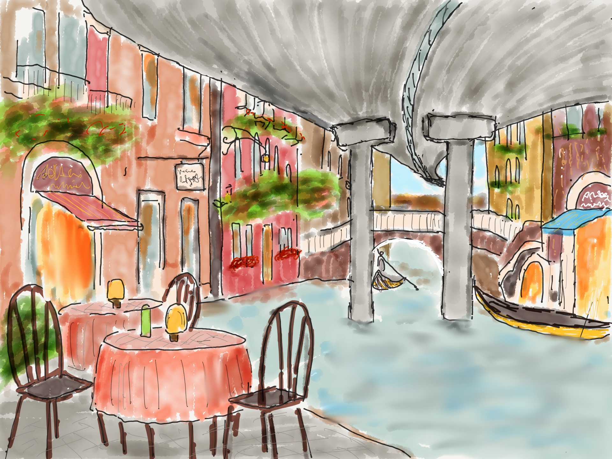
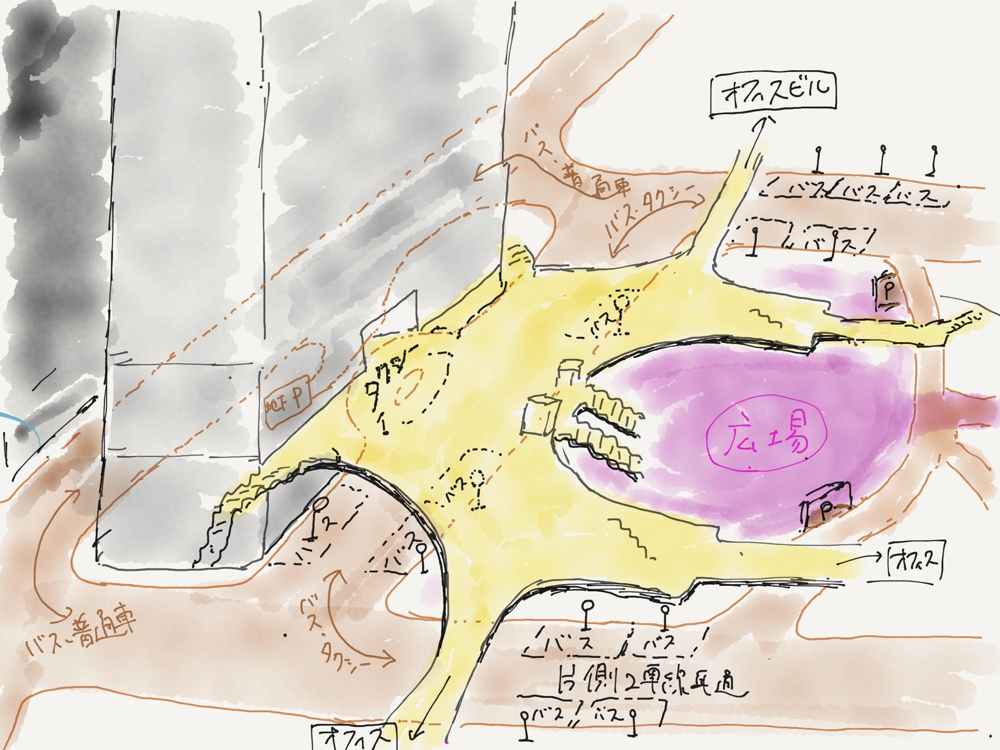

Painting
モットー
ちょっとした遊び心を添えて
高校生の美術の時間に描いた油絵と、iPadを買ってからapple pencilで描いた絵です。
普通の絵もありますが、わずかばかりの遊び心を添えて描いたものもあります
電車が好きなので、電車をモチーフにしたものが若干多め？
自画像高校2年生の美術の時間に描いた自画像です。見つめているものは何だか分かりますか？…そう、希望です。ポイントは、周りの同級生は背景をただの単色（や工夫してもそれに明度のグラデーションをつけただけ）だったのに対し、僕は夕焼けと荒野を描いた点です。 
|
理想と現実高校2年生の夏休みの課題で描いたものです。アクリル絵の具を使っているため、特に膨らみをもたせる部分のグラデーションに苦労したことを覚えています。ポイントは背景のキスマーク。口に絵の具を塗って描きました。「カドミウムレッド」などの有害絵の具は使っていなかったので一命をとりとめました。 
|
30 years高校2年生の美術の卒業制作です。写真では伝わらないですが、1m級の大きなサイズでできています。この頃は国連とかで働いているイメージだったらNYの板チョコビルディングを描いているけど、今は違うかなー。

|
安田講堂駅iPadで描いた絵です。安田講堂を描こうとしていたら、途中で飽きたので駅に路線変更しました。ちょっとゆがんでますね。

|
改札の無い田舎駅iPadで描いた絵です。数十年後、もしかしたら数年後、自動改札がなくなったときに、駅はもっと街に対してペラっとくっつくのではないかと思われます。

|
場違いなE235系iPadで描いた絵です。のどかな田舎の水辺、マリオの土管が突如表れたと思ったら、中から飛び出してきたのは山手線新車両E235系です。

|
カステラ電鉄iPadで描いた絵です。美味しそうな電車ですね。広島市内を走る路面電車のように信号で止まりながら、ゆっくりと進みます。小鳥に食べられないように。

|
東京メトロ便所線iPadで描いた絵です。東京メトロの10路線目の電車として開通いたしました。カラーが東西線とやや被っていますが、名前に似つかない爽やかなイメージとなるよう、ブランディング戦略を実施しています。

|
ケーブルが品切れだったので、E231系で代用したンボーブリッジiPadで描いた絵です。ケーブルの材料が不足していたため、新型E235系で置き換えられてしまうE231系がケーブルとして採用されたようです。

|
日本から輸出された205系を首に巻く、ジャカルタのビーチの女の子iPadで描いた絵です。ジャカルタに輸出されたはずの205系ですが、なぜか現地で知り合った女の子が首にかけていました。

|
ベネツィアの終焉iPadで描いた絵です。日本橋の上にかかる首都高速のように、空間利用の効率化を追い求めていく人類が作ってしまうかもしれない？AIはそう判断するかもしれないけど、数式では記述できない何か、を大切にできるのが人間…とかね！

|
品川駅港南口iPadで描いた絵です。授業の課題で品川駅港南口の駅と街のつなぎをスケッチしました。人は上、交通は下。駅前には地上広場。駅の両側から回り込むように幹線道路が接続されています。

|